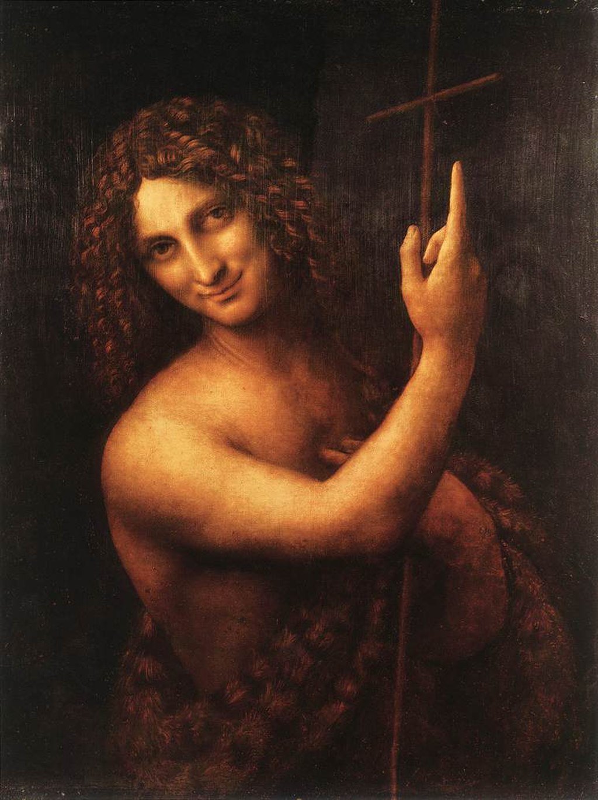

<head>
<meta charset="UTF-8" />
<meta name="keywords" content="drawing, painting" />
<meta name="description" content="drawings by Sunjy" />
<title>Sunjy</title>
<link rel="shortcut icon" type="image/x-icon" href="../../mImages/mCommon/favicon.ico" media="screen" />
<link rel="stylesheet" type="text/css" href="../../mCsses/mCommon/mCssA.css" />
<link rel="stylesheet" type="text/css" href="../../mCsses/mCommon/mCssB.css" />
<link rel="stylesheet" type="text/css" href="../../mCsses/mCommon/mCssC.css" />
<link rel="stylesheet" type="text/css" href="../../mCsses/mCommon/mCssD.css" />
<link rel="stylesheet" type="text/css" href="../../mCsses/mContent/mCssA.css" />
<link rel="stylesheet" type="text/css" href="../../mCsses/mContent/mCssB.css" />
<link rel="stylesheet" type="text/css" href="../../mCsses/mContent/mCssC.css" />
<link rel="stylesheet" type="text/css" href="../../mCsses/mContent/mCssD.css" />
</head>
<script type="text/javascript" src="../../mScripts/mContent/mContentAA.js" /></script>
<script type="text/javascript" src="../../mScripts/mContent/mContentAB.js" /></script>
<script type="text/javascript" src="../../mScripts/mContent/mContentAC.js" /></script>
<script type="text/javascript" src="../../mScripts/mContent/mContentAD.js" /></script>
<script type="text/javascript"></script> 
<script type="text/javascript">
document.write('<div class="mImgAbsolute"></div>');
/*
document.write('<p class="mFontSizeBColor" />From a white paper...</p>');
document.write('<table class="center"><tr><td>');
document.write('');
document.write('</td></tr></table>');
*/
</script>


<script type="text/javascript">
document.write('<p class="mFontSizeBColor" />St John the Baptist</p>');
document.write('<p class="mFontSizeSColor" />“St John the Baptist” by Leonardo da Vinci is a High Renaissance oil painting on walnut wood completed from 1513 to 1516. Before this work, Saint John was traditionally portrayed as a gaunt ascetic. Leonardo’s innovative depiction proved influential upon later artists who show a similarly youthful saint in isolation, with a strong contrast between the dark background and the illumination of the figure.<br><br>Through the use of chiaroscuro, the figure appears to emerge from the shadowy background. The Saint is dressed in pelts, has long curly hair, and is smiling in an enigmatic manner reminiscent of Leonardo’s famous Mona Lisa. He holds a reed cross and points up toward heaven.<br><br>Kenneth Clark noted the sense of “uneasiness” that the painting imbues, and other critics have commented on the “disturbingly erotic” depiction. This painting is believed to be Leonardo da Vinci’s final painting, and it may be Leonardo da Vinci’s view of the grace that awaited him.<br></p>');
document.write('<table class="center" /><tr><td>');
document.write('<br>Through the use of chiaroscuro, the figure appears to emerge from the shadowy background. The Saint is dressed in pelts, has long curly hair, and is smiling in an enigmatic manner reminiscent of Leonardo’s famous Mona Lisa. He holds a reed cross and points up toward heaven.<br><br>Kenneth Clark noted the sense of “uneasiness” that the painting imbues, and other critics have commented on the “disturbingly erotic” depiction. This painting is believed to be Leonardo da Vinci’s final painting, and it may be Leonardo da Vinci’s view of the grace that awaited him.<br>" />');
document.write('</td></tr></table>');
</script>


